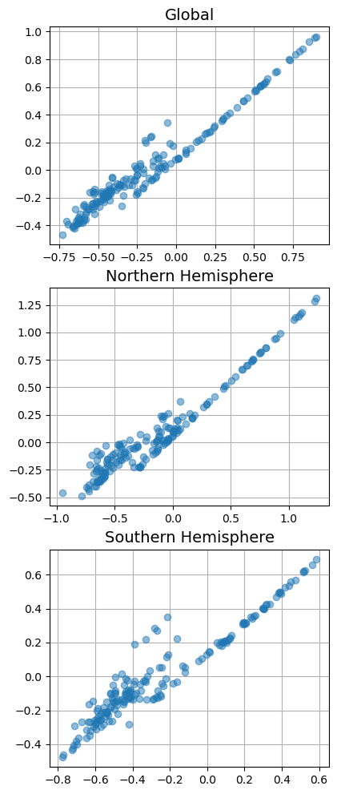

We have now arrived at the fifth and final blog post (as of now). This last one will be shorter, but we will use most of what we’ve learned so far to do anomaly detection. Let’s get started.
Anomaly Detection
Anomaly detection is used to detect… you guessed it: anomalies. So what are the use cases of detecting anomalies? Well, there are some clear ones with fraud detection, cybersecurity, and video surveillance. Another great one is data preprocessing. Remember when we did Linear Regression and two outliers caused our “best-fit” line to deviate a substantial amount? With data preprocessing, we can train a model to look through our data and find data points that are not similar to the majority of the rest of the data. This is extremely useful when training new models.
The Dataset
Let’s jump right into the dataset. It was downloaded from Hugging Face and contains data about the yearly measurements of ocean temperature in different regions of the world.
import matplotlib.pyplot as pltimport pandas as pddf = pd.read_csv('temperature.csv', encoding='windows-1252')df.head()
Entity
Code
Year
Global average temperature anomaly relative to 1961-1990
Upper bound (95% confidence interval) of the annual temperature anomaly
Lower bound (95% confidence interval) of the annual temperature anomaly
0
Global
NaN
1850
-0.417659
-0.246115
-0.589203
1
Global
NaN
1851
-0.233350
-0.054832
-0.411868
2
Global
NaN
1852
-0.229399
-0.049416
-0.409382
3
Global
NaN
1853
-0.270354
-0.110700
-0.430009
4
Global
NaN
1854
-0.291630
-0.150436
-0.432824
df.info()
<class 'pandas.core.frame.DataFrame'>
RangeIndex: 519 entries, 0 to 518
Data columns (total 6 columns):
# Column Non-Null Count Dtype
--- ------ -------------- -----
0 Entity 519 non-null object
1 Code 0 non-null float64
2 Year 519 non-null int64
3 Global average temperature anomaly relative to 1961-1990 519 non-null float64
4 Upper bound (95% confidence interval) of the annual temperature anomaly 519 non-null float64
5 Lower bound (95% confidence interval) of the annual temperature anomaly 519 non-null float64
dtypes: float64(4), int64(1), object(1)
memory usage: 24.5+ KB
We can see obvious trends, but it is clear that there are some extremely large jumps and dips for certain years. It definitely seems like the Southern Hemisphere has the most action. Let’s plot the upper bound versus the lower bound this time:
X = df['Lower bound (95% confidence interval) of the annual temperature anomaly']y = df['Upper bound (95% confidence interval) of the annual temperature anomaly']plt.figure(figsize=(4.5, 12))plt.subplot(311)plt.plot(X[df['Entity'] =="Global"], y[df['Entity'] =="Global"], "o", alpha=0.5)plt.title('Global')plt.grid()plt.subplot(312)plt.plot(X[df['Entity'] =="Northern Hemisphere"], y[df['Entity'] =="Northern Hemisphere"], "o", alpha=0.5)plt.title('Northern Hemisphere')plt.grid()plt.subplot(313)plt.plot(X[df['Entity'] =="Southern Hemisphere"], y[df['Entity'] =="Southern Hemisphere"], "o", alpha=0.5)plt.title('Southern Hemisphere')plt.grid()plt.show()

Sure enough, the Southern Hemisphere seems to have quite a few years where the upper and lower bounds are wildly different from what they usually are. Let’s use DBSCAN to see if we can find clusters and anomalies:
And there we have it! We were easily able to classify the most obviously out-of-place data points as anomalies using DBSCAN. At this point, the data scientist could remove the corresponding data to keep any trained models accurate, or leave it in and inform users of the data set that these exist.